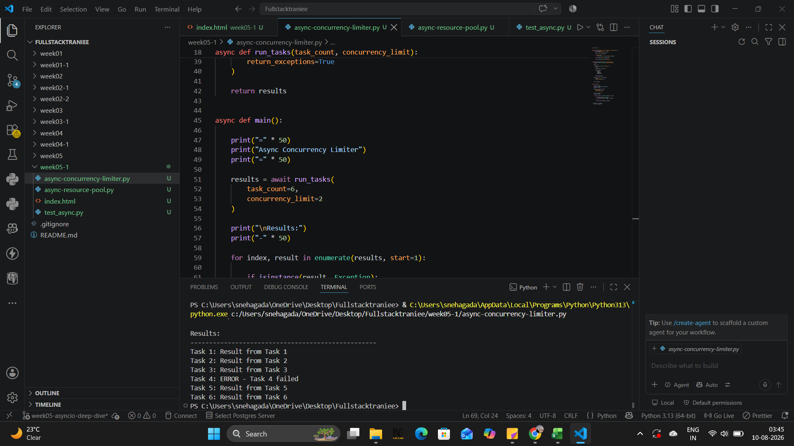
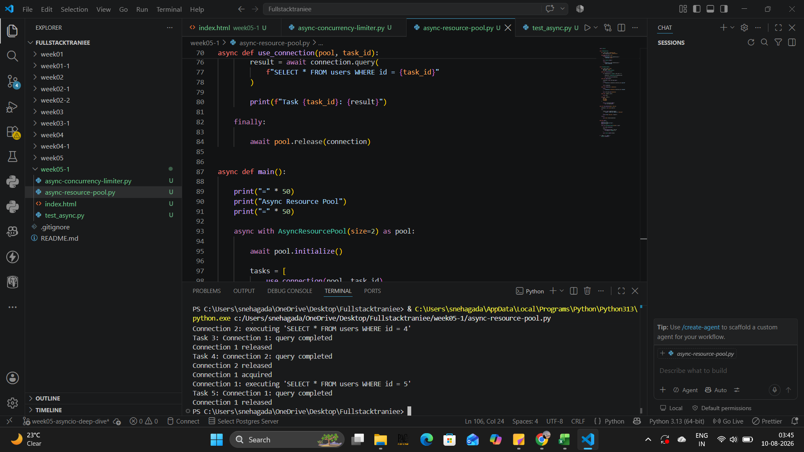
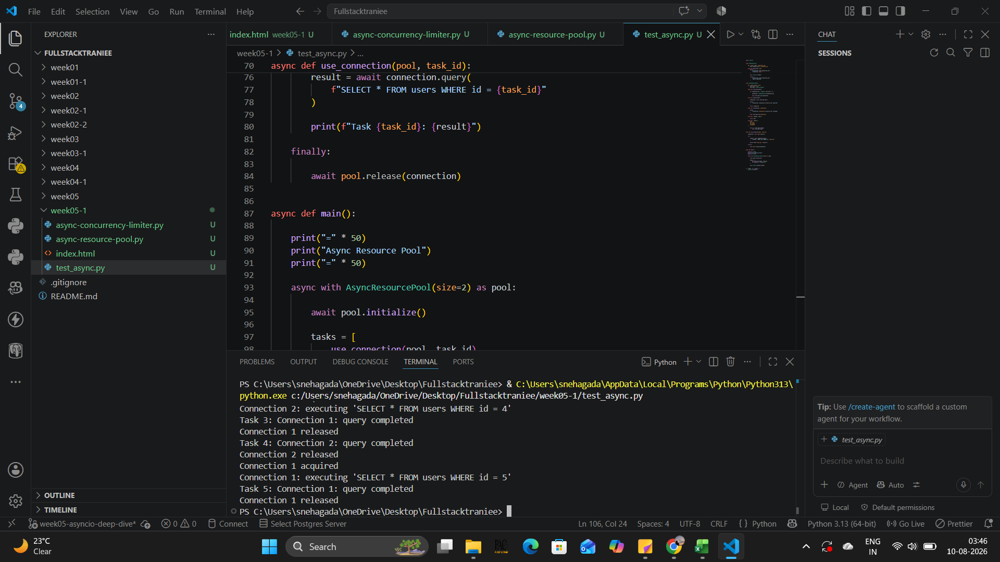

This assignment focused on Python's asynchronous concurrency patterns, including asyncio.Semaphore, asyncio.Queue, async context managers, async task queues, concurrency limits, and asynchronous error handling.
Implemented an asynchronous task queue using
asyncio.Semaphore to limit the number of coroutines
running concurrently. The implementation also demonstrates
error handling using asyncio.gather() with
return_exceptions=True.

Implemented a fake asynchronous resource pool using
asyncio.Queue. The pool manages a limited number
of resources and uses an asynchronous context manager to
manage resource usage safely.

Tested the concurrency limiter, resource pool, and asynchronous context manager to verify that all implementations work correctly.
